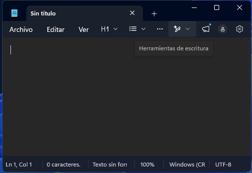

En los últimos años la computación en la nube ha transformado el trabajo académico. Mucha gente utiliza Google Docs para escribir textos pero no saben usarlo de manera correcta, al no leer manuales y tampoco consultar con profesores. Además hay muchos problemas cuando no se guarda de forma correcta el archivo en Drive, o cuando hay una pérdida accidental de datos.
En la siguiente tabla vemos las notas medias que obtuvieron los alumnos de la clase al realizar la práctica sobre formatos y tipografías en el ordenador del instituto:
| Nombre del alumno | Práctica 1 | Práctica 2 |
|---|---|---|
| Carlos | 7.8 | 10 |
| Maria | 5 | 0 |
El manejo adecuado del procesador de textos requiere mucha atención y práctica constante para dominar sus herramientas.

Los procesadores de texto son herramientas indispensables en el ámbito personal, académico y profesional.